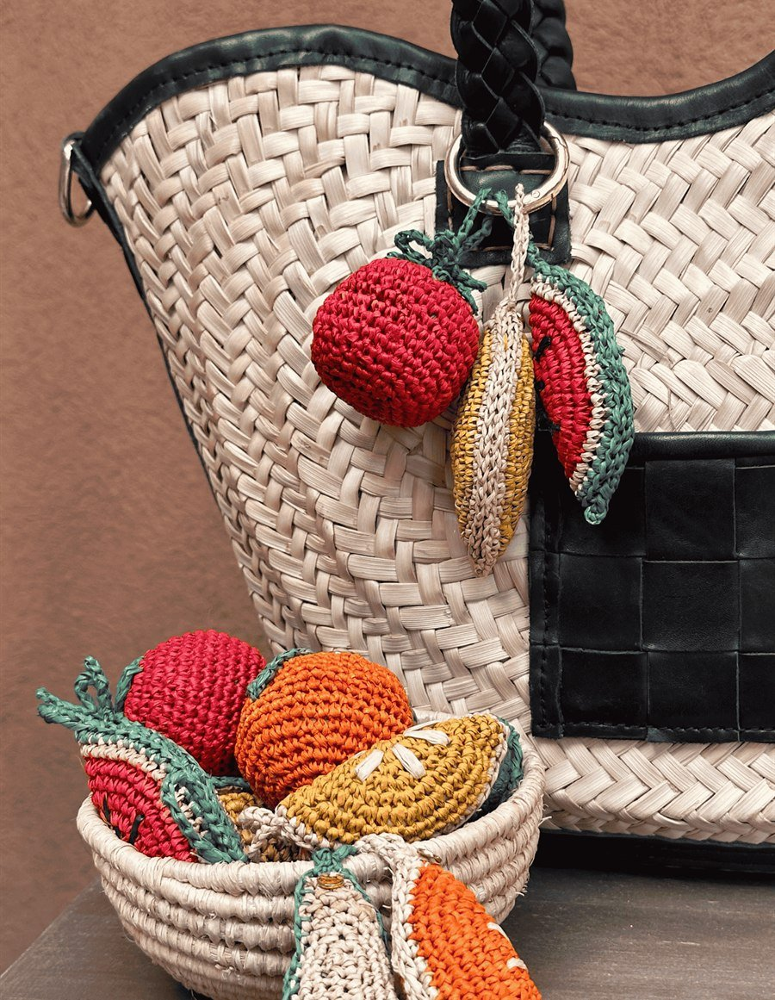
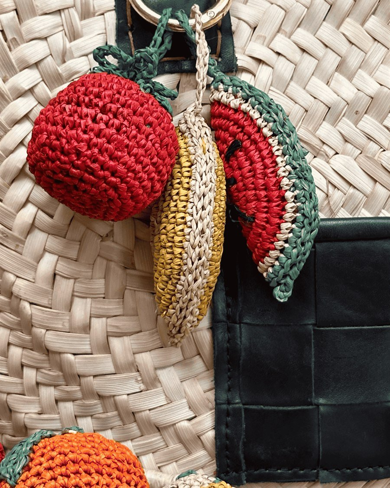
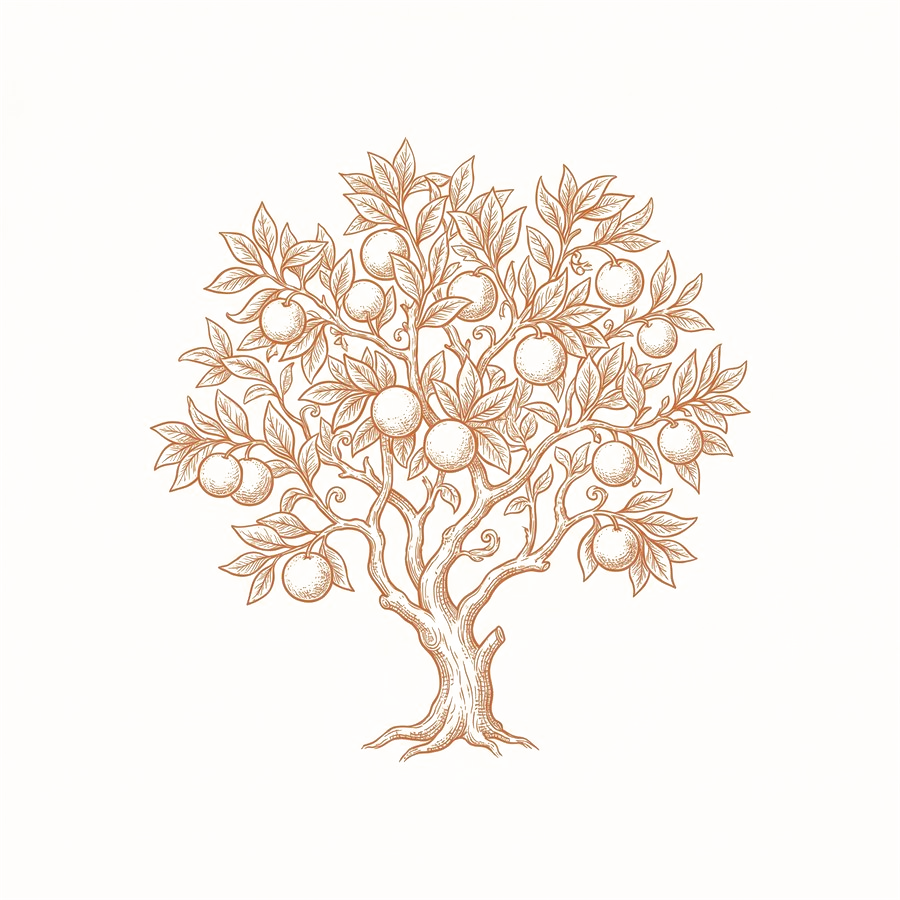
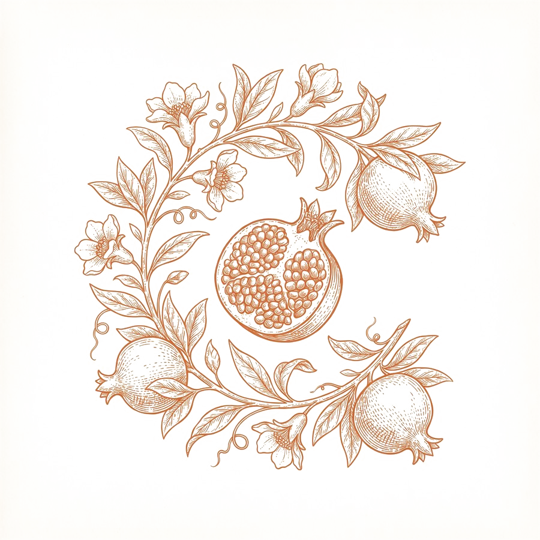
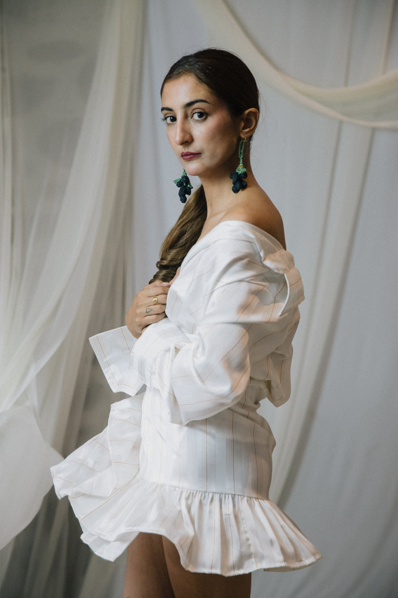
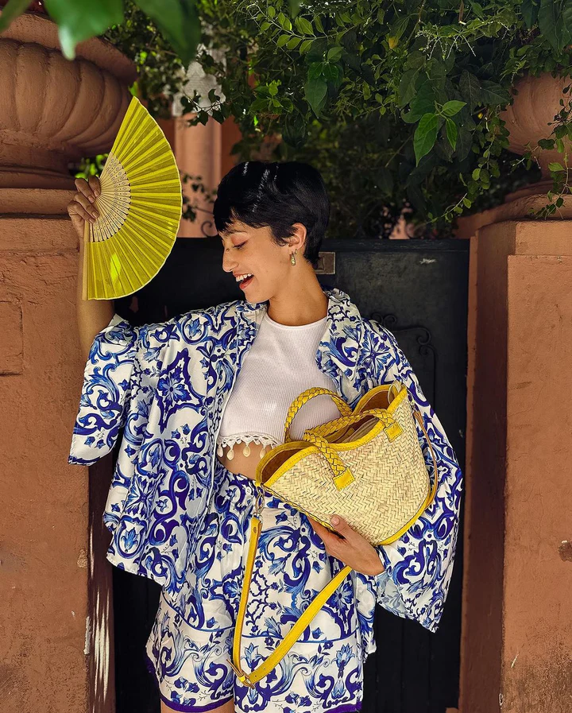

YZA
La Sculpture
The new icon from Marrakech
Handmade in raffia, banana leaves and beads by the women of our Guéliz atelier.
Éditions limitées - une fois parties, elles ne reviennent pas
L’univers YZA
Quatre façons de glisser Marrakech dans votre sac

Charms en raphia
Un peu de Marrakech accroché au sac - un sac nu, c’est un peu triste.
Prêt-à-porter
Tops, jupes paréo et pantalons qui se répondent.

Paniers & sacs
Réalisés à la main. Le même atelier, les mêmes femmes, d'année en année. Pour des années, pas une saison.
Accessoires
Des souvenirs de Marrakech qui ne prennent pas la poussière sur une étagère.L’art du raphia
Le Marché aux Fruits
Pas d’imprimé, pas de machine : chaque fruit est crocheté à la main, un fil de raphia à la fois. Une technique lente et exigeante, que peu de mains maîtrisent encore. La couleur, le relief, la rondeur - tout naît du geste, ici, à Guéliz. Notre façon d’emporter le marché de Marrakech, ses agrumes, ses grenades et ses figues, au creux de la main.
Voir les charms

Les préférés
Coups de cœur
L’offre
Trois façons de commencer
Du duo à offrir au panier garni : composez votre Fruit Market.
Elles portent YZA
De Marrakech à Tokyo
YZA Girls
Elles portent YZA.
YZA porte leurs histoires.They wear YZA.
YZA carries their stories.Ellas visten YZA.
YZA lleva sus historias.Onlar YZA giyer.
YZA onların hikâyelerini taşır.يرتدين YZA.
YZA تحمل حكاياتهن.
Quelques infos



Journal
Marrakech, histoires & savoir-faire

AtelierAtelierAtelierAtölyeالأتيليه
Les mains de GuélizThe hands of GuélizLas manos de GuélizGuéliz’in elleriأيادي Guéliz
Une matinée à l'atelier - le café qui passe, le raphia qui glisse entre les doigts de Fatima, 37 ans de métier. Un fruit prend forme, puis un autre. Plus de mains, moins de machines.A morning in the atelier - coffee on the stove, raffia slipping through Fatima's fingers, 37 years at the craft. One fruit takes shape, then another. More hands, fewer machines.Una mañana en el atelier — el café que pasa, la rafia que se desliza entre los dedos de Fatima, 37 años de oficio. Una fruta toma forma, luego otra. Más manos, menos máquinas.Atölyede bir sabah — kahve demleniyor, rafya 37 yıllık usta Fatima’nın parmaklarından kayıyor. Bir meyve şekil alıyor, ardından bir başkası. Daha çok el, daha az makine.صباحٌ في الأتيليه — القهوة تُحضَّر، والرافيا تنساب بين أصابع فاطمة، سبعةٌ وثلاثون عامًا من الحرفة. تتشكّل ثمرة، ثم أخرى. أيادٍ أكثر، وآلات أقل.

Fruit Market
Pourquoi des fruits ?Why fruit?¿Por qué frutas?Neden meyve?لماذا الفاكهة؟
L'étal du souk, le panier posé près de la porte, l'orange qu'on partage après le déjeuner. Chez nous, la couleur est une langue - et la vie est plus colorée à Marrakech.The souk stall, the basket by the door, the orange shared after lunch. For us, colour is a language - and life is more colourful in Marrakech.El puesto del zoco, la cesta junto a la puerta, la naranja que se comparte tras el almuerzo. Para nosotras, el color es un idioma — y la vida tiene más colores en Marrakech.Souk tezgâhı, kapının yanındaki sepet, öğleden sonra paylaşılan portakal. Bizim için renk bir dildir — ve hayat Marrakech’te daha renkli.دكان السوق، السلة قرب الباب، البرتقالة التي تُقاسَم بعد الغداء. اللون عندنا لغة — والحياة في Marrakech أكثر ألوانًا.

StyleStyleEstiloStilتنسيق
Porter le raphiaWearing raffiaLlevar la rafiaRafyayı taşımakارتداء الرافيا
Du panier de plage à la robe du soir - trois façons d'accrocher le fruit que Fatima crochète à la main. Sur l'anse, au poignet, à l'épaule : à toi de l'adopter.From beach basket to evening dress - three ways to clip on the fruit Fatima crochets by hand. On the handle, at the wrist, over the shoulder: make it yours.De la cesta de playa al vestido de noche — tres formas de enganchar la fruta que Fatima teje a ganchillo. En el asa, en la muñeca, al hombro: hazla tuya.Plaj sepetinden gece elbisesine — Fatima’nın elle tığla ördüğü meyveyi takmanın üç yolu. Sapta, bilekte, omuzda: kendine ait kıl.من سلة الشاطئ إلى فستان السهرة — ثلاث طرق لتعليق الثمرة التي تحبكها فاطمة يدويًا. على المقبض، أو حول المعصم، أو على الكتف: اجعليها لكِ.